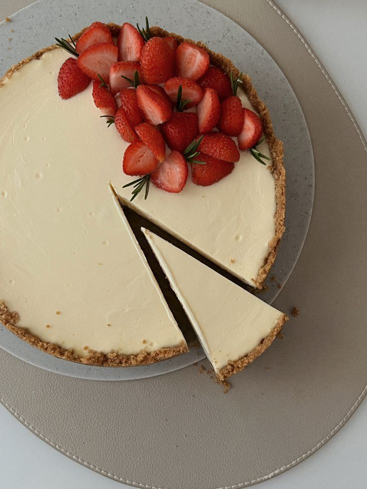
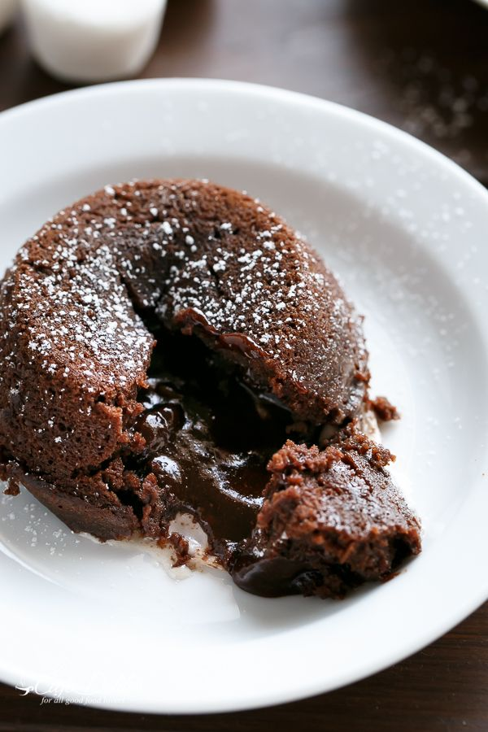
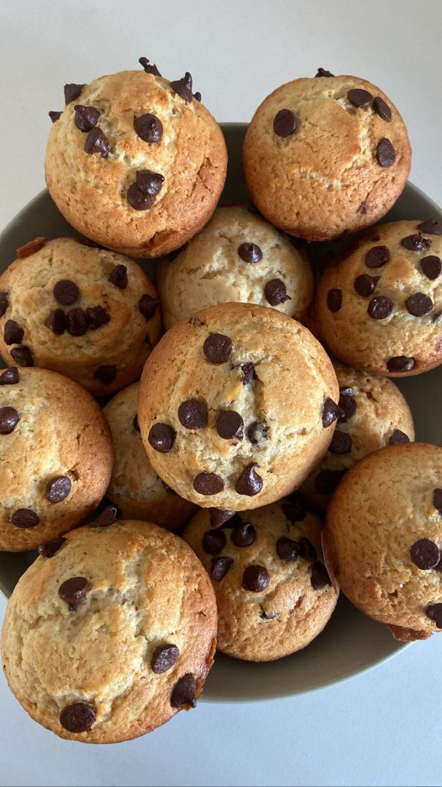

Recetas dulces:
New York Cheesecake

Ingredientes:
Base:
- Galletitas Lincoln 150gr
- Azúcar impalpable 30gr
- Manteca 50gr
Relleno:
- Queso tipo cream cheesecake 750gr
- Azúcar 150gr
- Huevos(aprox 3) 165gr
- Almidón de maíz 10gr
- Crema de leche 50cc
- Esencia de vainilla C/N
- Jugo de limón 20cc
Preparación:
Base:
- Procesar todos los ingredientes
- Colocar en el fondo de un aro
- Presionar para compactar
- Enfriar
Relleno:
- Mezclar el queso crema con el azúcar hasta disolverla. Incorporar los huevos sin batir, el Almidón desleido en la vainilla y el jugo de limón.
- Incorporar la crema
- Rellenar el molde con la base
- Hornear 45 minutos a 150ºC
- TIP! (Puede cocinarse a mas tiempo en horno mas bajo o a baño maria)
- Dejar enfríar en el horno apagado 1 hora (muy imp para que quede pareja y no se hunda en el centro) y despues llevar a frío
Volcán de Chocolate

Ingredientes:
Corazón:
- Agua 45cc
- Crema de leche 150cc
- Chocolate semiamargo 90gr
- Manteca 45gr
Bizcocho:
- Yema de huevo 9un
- Azúcar 150gr
- Chocolate semiamargo 450gr
- Manteca 180gr
- Clara de huevo 9un
- Harina "0000" 60gr
Preparación:
Corazón:
- Hervir el agua con la crema. Aparte, fundir el chocolate con la manteca. Unir las dos preparaciones
- Dar forma en un molde y congelar
Bizcocho:
- Batir las yemas con el azúcar, incorporar el chcolate con la manteca fundidos, y por último las claras y la harina.
- Forrar aros con papel de cocina enmantecado, llenar la mitad con bizcocho, colocar el corazon y terminar con el bizcocho cubriendo a 3/4 del molde. Congelar
- Cocinar a horno fuerte 8 minutos aproximadamente
- NOTA: Tambien se puede realizar en moldes descartables de aluminio doblementente enmantecado
Brownie de Chocolate

Ingredientes:
- Manteca 180gr
- Chocolate amargo 300gr
- Esencia de vainilla C/N
- Huevo 330gr
- Azúcar 450gr
- Sal fina 5gr
- Harina 0000 250gr
- Nuez(opcional, pero MUY recomendado) 150gr
- En caso de quererlos mas inteso: Cacao amargo 20gr
Preparación:
- Fundir el chocolate picado con la manteca a baño maría. Al finalizar, dejar a que se enfrie un poco hasta estar tibio.
- Batir ligeramente los huevos con el azúcar y la esencia de vainilla. Incorporar el chocolate y la manteca fundidos.
- Agregar la harina y la sal tamizadas. Incorporar las nueces picada gruesas.
- Colocar en un molde rectangular de 25x35 forrafo con papel aluminio enmantecado.
- Hornear a 180ºC, hasta que esten firmes los bordes y la superficie (no tanto porque sino se va a secar)
Muffins de banana

Ingredientes secos:
Ingredientes humedos:
- Huevo 1un
- Aceite de girasol o coco 90cc
- Miel (1 cucharada)
- Esencia de vainilla (1 cucharadita)
- Banana 3-4un (chicas)
Ingredientes opcionales:
- Nueces picadas 50gr
- Chocolate picado o chips 50gr
- Canela (1 cucharadita)
Preparación:
- En un bowl tamizar los secos. Harina, sal, bicarbonato, polvo de hornear y canela (si es que optaron por agregarle). Luego agregar el azúcar. Reservar
- En otro bowl batir los huevos con el aceite, la esencia y la miel.
- Incorporar de a poco las dos preparaciones previas.
- Sumar la banana pisada, simplemete mzclar hasta que quede bien integrado y humedo.
- Por ultimo agregar el chocolate y/o las nueces a preferencia
- Rellenar la placa de muffins/pirotines/budinera, importante que este lleno 3/4 del molde.
- Llevar a horno precalentado a 180ºC/190ºC durante 15 a 20 minutos aproximadamente
- TIP! para que queden mas lindos al sacarlos del horno decorar con algunos chips arriba mientras esten calientes